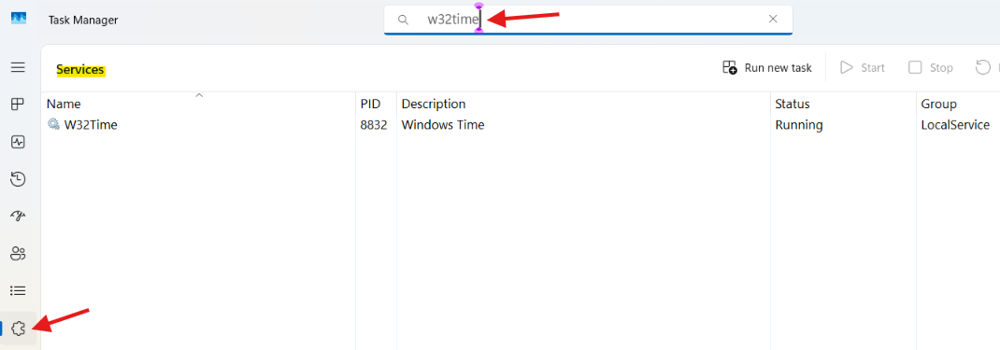
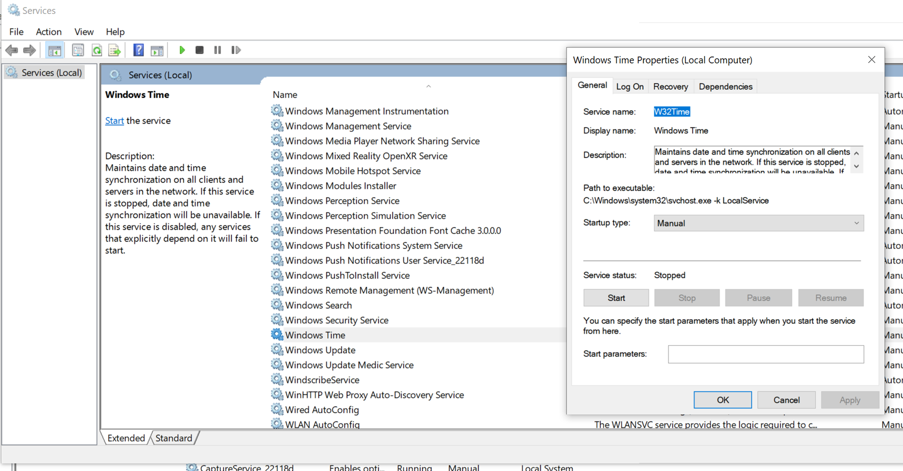
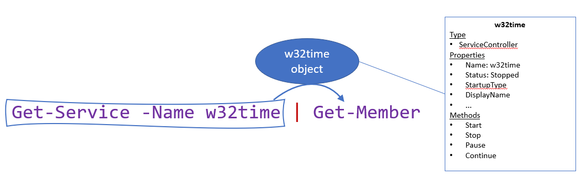
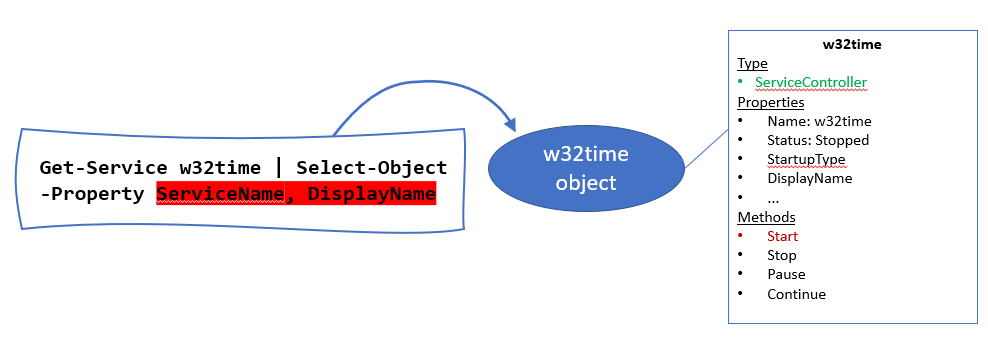
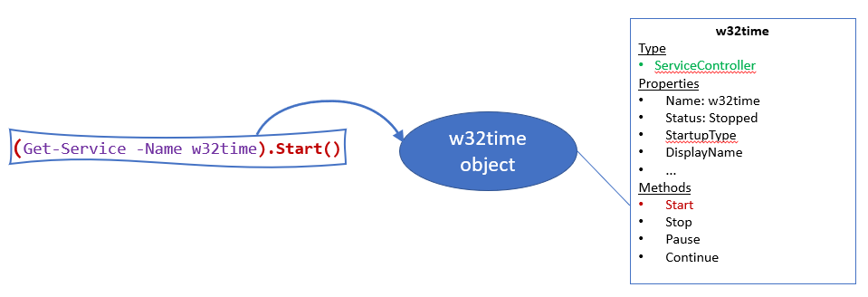

Learning objectives
- Explain the difference between an object, its properties, and its methods.
- Send objects through a pipeline and inspect their members.
- Query Windows processes and services using object properties.
Prerequisites
- Familiarity with
Get-CommandandGet-Help.
Objects and Data Types
General
In computer science and programming, an object is a fundamental concept that represents a real-world entity or a data structure that combines data (attributes) and methods (functions or procedures) to operate on that data. Objects are instances of classes, which serve as blueprints or templates for creating objects with specific attributes and behaviors. This is known as object-oriented programming (OOP).
Class and object overview
flowchart LR
A["Class: Car blueprint"] --> B["Object: one car"]
B --> C["Properties: color and model"]
B --> D["Methods: actions such as start"]
Different objects can come from the same class and have different property values. Not every object exposes the same properties or methods.
Key concepts related to objects in programming include:
Class: A class is a blueprint or template that defines the structure and behavior of objects. It specifies the attributes (properties) and methods that objects of that class will have.- Example: A class called
Carmay have attributes likecolor,make, andmodel, and methods likestart(),stop(), andaccelerate().
- Example: A class called
Object: An object is an instance of a class, created from the class definition. It encapsulates data and methods, allowing for encapsulation, modularity, and reusability in code.- Example: If you have a class called
Car, you can create multiple objects (instances) of that class, such asmyCar,yourCar, etc., each with its own unique attributes and behaviors.
- Example: If you have a class called
Attributes/Properties: Attributes, also known as properties or fields, are the data members of an object. They represent the object's characteristics or state.- Example: In a class representing a car, attributes might include
color,make, andmodel.
- Example: In a class representing a car, attributes might include
Methods: Methods are functions or procedures defined in a class that operate on the object's data (attributes). They represent the object's behavior.- Example: In a class representing a car, methods might include
start(),stop(), andaccelerate().
- Example: In a class representing a car, methods might include
Encapsulation: Encapsulation is the principle of bundling data (attributes) and the methods that operate on that data within a single unit (an object). It restricts access to the internal details of an object and provides a clear interface for interacting with it.- Example: In a class representing a car, the attributes might include
color,make, andmodel, while the methods could includestart(),stop(), andaccelerate(). The internal implementation of these methods is hidden from the user, who interacts with the car object through its public interface.
- Example: In a class representing a car, the attributes might include
Inheritance: Inheritance allows one class to inherit the attributes and methods of another class. It promotes code reuse and hierarchy among classes.- Example: If you have a class called
Vehicle, you can create a subclass calledCarthat inherits the attributes and methods of theVehicleclass, while also adding its own unique attributes and methods.
- Example: If you have a class called
Polymorphism: Polymorphism allows objects of different classes to be treated as objects of a common base class. This enables more flexible and dynamic programming.- Example: If you have a base class called
Vehicle, you can create different subclasses likeCar,Truck, andMotorcycle, each with their own unique characteristics, but they can all be treated asVehiclewithout knowing their specific types.
- Example: If you have a base class called
Objects vs Data Type
Objects and data types are related concepts in programming, but they serve different purposes and have distinct characteristics:
Data Type:
Definition:- A data type defines the type of data that a variable can hold. It specifies the format of data and the operations that can be performed on that data.
Examples:- Common data types include integers, floating-point numbers, strings, characters, and booleans.
Usage:- Data types are used to declare variables and specify the type of data they can store. They define the range of values and the operations that can be performed on the data.
Static:- Data types are often static, meaning that the type of a variable is determined at compile-time and remains constant throughout the variable's lifetime.
Object:
Definition:- An object is an instance of a class in object-oriented programming (OOP). It encapsulates both data (attributes or properties) and methods (functions or behavior) that operate on that data.
Examples:- In OOP, objects can represent real-world entities or abstract concepts.
- For example, a "Car" object may have properties like "color" and "speed" and methods like "accelerate" and "brake."
Usage:- Objects are used to model and represent entities, combining data and behavior. They are instantiated from classes and interact with other objects to perform tasks.
Dynamic:- Objects are dynamic; their properties and methods can change during runtime. They are created and destroyed as needed, and their behavior can be modified through inheritance and polymorphism.
The key difference between data types and objects is that data types define the format and range of data that a variable can hold, while objects combine both data and behavior and represent instances of classes in object-oriented programming. Data types are used for individual pieces of data, while objects are used for modeling complex entities or systems by encapsulating data and behavior together.
Objects in PowerShell
Objects are a core concept in both general programming and PowerShell. They enable the representation of real-world entities, data modeling, and encapsulation of data and behavior. Understanding how objects work in PowerShell is essential for effective scripting and automation, as PowerShell is built around the concept of manipulating objects in a pipeline-oriented manner.
Some key aspects:
Pipeline and Object Output: PowerShell cmdlets typically produce objects as output, which can be passed through the pipeline. The pipeline allows you to chain cmdlets together to manipulate objects. This is a fundamental feature of PowerShell's scripting style.Example: When you run a cmdlet like
Get-Process, it returns a collection of process object instances, each representing a running process on the system. You can then pipe these objects to other cmdlets for further processing.Get-ProcessHandles NPM(K) PM(K) CPU(s) Id ProcessName ------- ------ ----- ------ -- ----------- 450 25 65000 8.42 3420 chrome 320 18 42000 2.31 5812 codeEach row represents one object instance representing a running process.
Properties and Methods: Objects in PowerShell often have properties (data) and methods (functions). You can access and manipulate these properties and methods to perform tasks.Example: You can access the properties of a process object to retrieve information about it, such as its name, ID, and memory usage. You can also call methods on objects to perform actions, such as stopping a process.
$process = Get-Process -Name "notepad" $process.Id # Accessing the Id property $process.Kill() # Calling the Kill method to stop the process
Get-Member: The Get-Member cmdlet is used to inspect the properties and methods of objects. It helps you understand the structure and capabilities of objects in PowerShell.Dot Notation: You can access object properties and methods using dot notation. For example, $object.Property accesses a property of an object, and $object.Method() invokes a method.Custom Objects: PowerShell allows you to create custom objects using New-Object or by defining custom classes. This flexibility is useful for creating structured data and custom tools.Object Serialization: PowerShell supports object serialization, allowing you to convert objects to different formats, such as XML or JSON, for storage or transmission.
Pipelines
In PowerShell, the pipe (|) is a fundamental and powerful feature that enables you to pass the output of one cmdlet or command as input to another, creating a "pipeline." This concept of pipelining is central to how you perform complex tasks, process data, and achieve automation in PowerShell. Here's an explanation of the use of pipelines in PowerShell:
Chaining Commands: The pipe allows you to chain multiple commands together in a single line, passing the output of one command to the next. For example:
Get-Process | Select-Object Name
"Hello","World" | Select-Object
Hello
World
Select-Object
Get-Help select-Object -online
The Select-Object cmdlet in PowerShell is used to filter and transform the properties of objects in a collection. It allows you to select specific properties from the input objects and create new custom objects that include only the selected properties.
Get-Process | Select-Object -Property ProcessName, Id, WS
Processes and Services
A process is an instance of a particular executable (.exe program file) running.
A service (daemon) is a process which runs in the background.
- managed by a Service Controller, eg Services and Controller app, services.exe
- can be configured to start when Windows starts and run in the background as long as Windows is running
- can be started manually or by an event.
- run in the context of three user accounts: System, Network Service, and Local Service.
- also work when a user is not logged in
Get/Start/Stop-Service
Information of the W32Time service in GUI environment
Get-Command Get-Service -Syntax
Methods and Properties 'w32Ttime':
Windows -> Ctrl + Shift + Esc or TaskMgr -> Tab Services -> search W32Time Windows -> Win + R -> services.msc -> search W32Time

9 ways to open Services in Windows

This object is a "ServiceController" for the W32Time service. Maintains date and time synchronization on all clients and servers in the Windows network.
Overview of all properties and methods of the object

Get some Properties of the object

Call a method of an object.

show all properties of w32Time:
Get-Service w32time | Select-Object *
show a selection of properties of w32Time:
Get-Service w32time | Select-Object -Property ServiceName, DisplayName, Status, Name, BinaryPathName, StartType
show one properties of w32Time:
(Get-Service -Name w32time).DisplayName
show data type of the object:
Get-Service w32time | Get-Member -MemberType Property
you can use the method GetType() to get the data type of the object:
(Get-Service -Name w32time).GetType()
output:
IsPublic IsSerial Name BaseType
-------- -------- ---- --------
True False ServiceController System.ComponentModel.Component
The method GetType() is a method of the System.Object class, which is the base class for all .NET objects. It returns the runtime type of the current instance, allowing you to determine the specific type of an object at runtime.
The service name is w32time; its display name is Windows Time. Compare the two parameter types:
Get-Service -Name "w32time"
Get-Service -DisplayName "Windows Time"
shows all the methods of the service:
Get-Service -Name w32time | Get-Member -MemberType Method
stop service - Admin rights:
(Get-Service -Name w32time).Stop()
Get-Service -Name w32time | Stop-Service
Check the status of the service - stop
Show solution
Get-Service -Name w32time | Select-Object DisplayName, Status
After a successful stop operation, the Windows Time service's status is
Stopped. The display name is Windows Time. If the change failed or the
system subsequently changed the service, inspect the actual status and error
instead of assuming success. Use only the assigned disposable lab system.
start service - Admin rights:
(Get-Service -Name w32time).Start()
Get-Service -Name w32time | Start-Service
Check the status of the service - start
Show solution
Get-Service -Name w32time | Select-Object DisplayName, Status
After a successful start operation, the Windows Time service's status is
Running. The display name is Windows Time. If the change failed or the
system subsequently changed the service, inspect the actual status and error
instead of assuming success. Use only the assigned disposable lab system.
Spooler Service Example:
Get-Service -Name spooler
Stop-Service -Name spooler
Start-Service -Name spooler
What property is needed to stop a specific service?
Show solution
Use the service object's Name property, such as w32time.
Stop-Service -Name accepts the service name; DisplayName is its separate,
human-readable label. You can also pass a service object through the pipeline.
Stopping a service requires appropriate rights and an assigned lab system;
no stop command is needed to answer this question.
Get/Start/Stop-Process
Get-Command *process*
Get-Command -verb start -noun process
Get-Command -verb stop -noun process
What property is needed to stop a specific process?
Show solution
Use the process object's Id with Stop-Process -Id to identify one
particular running process. A Name can match several processes, so it
does not necessarily identify a single instance. A process ID can be reused
after a process exits; inspect the intended current process before acting.
help Start-Process
Open Notepad multiple times:
Run the following commands and observe how your Windows and Notepad versions handle the launches; they may open separate windows, tabs, or processes.
Start-Process notepad
Start-Process notepad
Start-Process notepad
Start-Process notepad
Show solution
Four launch requests do not guarantee four processes. Notepad versions and settings can open tabs or reuse an existing process. Compare the visible windows or tabs with a read-only process query:
Get-Process -Name notepad -ErrorAction SilentlyContinue |
Select-Object Name, Id
Different IDs identify different process instances. The actual count varies; it cannot be inferred from the number of windows or tabs alone.
Close all notepad processes:
Get-Process notepad | Stop-Process
Question
Execute the following commands and explain?
"WinRM" | get-service
Show solution
A service-name string binds to Get-Service -Name by value, so
'WinRM' | Get-Service returns the WinRM service when it exists.
Its status varies with the computer.
Get-Process -Name accepts pipeline input by property name, not a bare
string by value. 'winlogon' | Get-Process therefore reports a binding
error; it does not select that process. Use Get-Process -Name winlogon
or supply objects with a suitable Name property.
Inspect the metadata and compare the second pipeline:
(Get-Command Get-Service).Parameters['Name'].Attributes
(Get-Command Get-Process).Parameters['Name'].Attributes
'winlogon' | Get-Process
In the parameter attributes, ValueFromPipeline is enabled for the
service-name input, whereas ValueFromPipelineByPropertyName is enabled
for the process-name input. Binding rules belong to individual parameters,
not to pipelines in general.